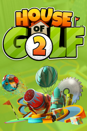

|  | |
| Tiempo de juego | No Jugado |
| Última actividad | Nunca |
| Añadido | 11/13/2024 0:35:38 |
| Modificado | 11/13/2024 1:09:33 |
| Estado de finalización | No Jugado |
| Librería | Playnite |
| Fuente | PORCHE |
| Plataforma | PC (Windows) |
| Fecha de lanzamiento | |
| Puntuación de la Comunidad | 56 |
| Puntuación de la Crítica | |
| Puntuación de usuario | |
| Género | Casual Deportes Indie |
| Desarrollador | Starlight Games |
| Editor | Starlight Games |
| Característica | Cloud Saves Compat. Parcial Con Mando Jcj Jcj A Pantalla (Com)Partida Logros De Multijugador Pantalla Partida/Compartida Préstamo Familiar Tablas De Clasificación De Un Jugador |
| Enlaces | Punto de encuentro Discusiones Guías Noticias Página de la tienda PCGamingWiki Logros |
| Tag | 3D 4 jugadores en modo local Arcade Casuales Coloridos Deportes Física Golf Indie Minigolf Multijugador Multijugador local Para mando Para toda la familia Puntuación de ataque Realistas Tercera persona Un jugador |